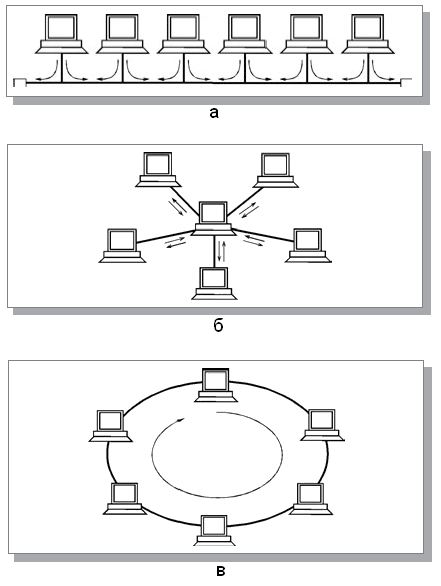
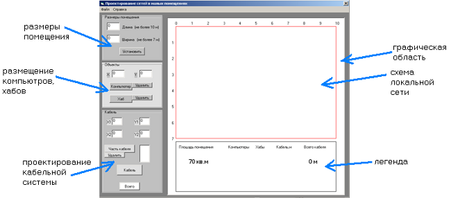
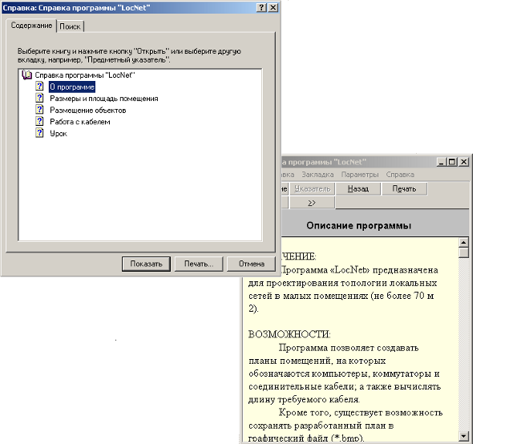
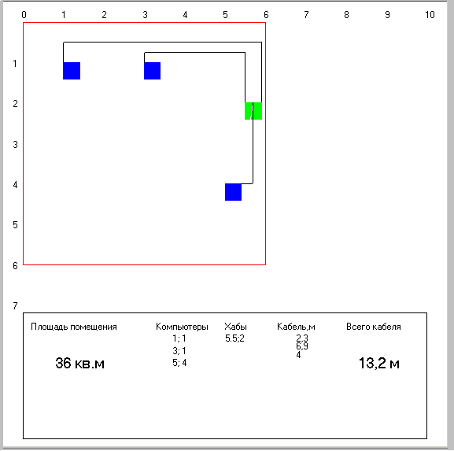

Чаще всего термин "локальные сети" или "локальные вычислительные сети" (LAN, Local Area Network) понимают буквально, то есть это такие сети, которые имеют небольшие, локальные размеры, соединяют близко расположенные компьютеры. Однако достаточно посмотреть на характеристики некоторых современных локальных сетей, чтобы понять, что такое определение не точно. Например, некоторые локальные сети легко обеспечивают связь на расстоянии нескольких десятков километров.
По сути, компьютеры, связанные локальной сетью, объединяются в один виртуальный компьютер, ресурсы которого могут быть доступны всем пользователям, причем этот доступ не менее удобен, чем к ресурсам, входящим непосредственно в каждый отдельный компьютер. Под удобством в данном случае понимается высокая реальная скорость доступа, скорость обмена информацией между приложениями, практически незаметная для пользователя. При таком определении становится понятно, что ни медленные глобальные сети, ни медленная связь через последовательный или параллельный порты не попадают под понятие локальной сети. Из данного определения следует, что скорость передачи по локальной сети обязательно должна расти по мере роста быстродействия наиболее распространенных компьютеров. Именно это и наблюдается: если еще десять лет назад вполне приемлемой считалась скорость обмена в 10 Мбит/с, то сейчас уже среднескоростной считается сеть, имеющая пропускную способность 100 Мбит/с, активно разрабатываются, а кое-где используются средства для скорости 1000 Мбит/с и даже больше.
Таким образом, главное отличие локальной сети от любой другой — высокая скорость передачи информации по сети.
По локальной сети может передаваться самая разная цифровая информация: данные, изображения, телефонные разговоры, электронные письма и т.д. Чаще всего локальные сети используются для разделения (совместного использования) таких ресурсов, как дисковое пространство, принтеры и выход в глобальную сеть, но это всего лишь незначительная часть тех возможностей, которые предоставляют средства локальных сетей. Например, они позволяют осуществлять обмен информацией между компьютерами разных типов. Полноценными абонентами (узлами) сети могут быть не только компьютеры, но и другие устройства, например, принтеры, плоттеры, сканеры. Локальные сети дают также возможность организовать систему параллельных вычислений на всех компьютерах сети, что многократно ускоряет решение сложных математических задач. С их помощью, как уже упоминалось, можно управлять работой технологической системы или исследовательской установки с нескольких компьютеров одновременно.
Под топологией (компоновкой, конфигурацией, структурой) компьютерной сети обычно понимается физическое расположение компьютеров сети друг относительно друга и способ соединения их линиями связи. Важно отметить, что понятие топологии относится, прежде всего, к локальным сетям, в которых структуру связей можно легко проследить.
Топология определяет требования к оборудованию, тип используемого кабеля, допустимые и наиболее удобные методы управления обменом, надежность работы, возможности расширения сети. И хотя выбирать топологию пользователю сети приходится нечасто, знать об особенностях основных топологий, их достоинствах и недостатках надо.
Существует три базовые топологии сети: шина, звезда и кольцо.

На сегодняшний день наиболее распространенной топологией является звезда. Однако вместо центрального компьютера используется, так называемый, концентратор (хаб). Такая звезда называется пассивной.
Программа "LocNet" позволяет проектировать топологию локальной сети в помещении (на данный момент программа рассчитана на помещения размером не более 70 м2), т.е. планировать размещение компьютеров, коммутаторов и прокладку кабеля. Кроме того, можно рассчитывать требуемую длину соединительного кабеля и сохранять схему сети в формате точечного рисунка (*.bmp).
В программе можно проектировать все виды топологий локальных сетей.
Программа имеет доступный интерфейс, который привычен для пользователей современных операционных систем. Все необходимые текстовые поля и кнопки находятся в одной части экрана и систематизированы для упрощения процесса поиска нужного действия. С помощью нескольких кнопок в программе "LocNet" можно размещать на поле для проектирования различные объекты (компьютеры, коммутаторы, соединительный кабель), а также удалять ранее добавленные объекты. Также есть возможность рассчитать полную длину необходимого соединительного кабеля. Графическое поле программы разделено на "поле для проектирования" и на "легенду". В последнюю выводятся все данные о координатах и длине кабеля для последующего использования схемы.

Программа включает справочную систему, которая описывает оптимальную последовательность выполняемых в программе действий, а также содержит описание самой программы.

Когда схема локальной сети создана, ее можно сохранить (Файл -> Сохранить).

В будущем планируется сделать программу ещё более удобной для пользователя. Например добавлять объекты не с помощью текстовых полей, а с помощью перетаскивания в поле для проектирования нужных объектов. Также планируется расширить программу для проектирования локальных сетей, не ограниченных одним помещением.
Программа "LocNet" была создана в VisualBasic (свободно распространяемой версии VB5.0 CCE), который является достаточно распространенной средой разработки для ОС Windows.
Перед тем, как приступить к написанию кода, необходимо было сформулировать основные задачи, которые будет выполнять программа, разработать необходимые алгоритмы.
Были поставлены следующие задачи:
Проанализировав функции, которые были возложены на будущую программу был разработан графический интерфейс. В нем можно выделить две основные части: область, с которой пользователь непосредственно работает, и графическую область, где отображается план помещения с элементами локальной сети и "легенда". Кроме того, потребовалось ввести строку меню. В "рабочей области" (РО) были использованы следующие объекты.
В качестве ГО был использован объект PictureBox.
Для ГО была задана система координат 110 на 110 единиц. При этом для
"легенды" отводилась нижняя область высотой в 30 единиц, а максимальный размер рамки обозначающей размер помещения (основная часть рисунка) не мог превышать 100 на 70 единиц. В дальнейшем, возможно заменить конкретные значения переменными, значения которых будет задавать пользователь. Таким образом, возможно удастся снять ограничение приложения на размер помещения. Сам же размер помещения (с учетом вышеизложенных ограничений) задается пользователем при помощи текстовых полей "Длина" и "Ширина". Затем событие-обработчик для кнопки «Установить» считает площадь и вписывает ее в "легенду", а также с помощью метода Line рисует прямоугольник.
Аналогично прорисовке "помещения" изображаются компьютеры и хабы.
На следующем этапе необходимо было реализовать возможность проектирования размещения кабеля. Сделать это можно с помощью указания координат начала кабеля и его конца, а также вычисления длины по координатам:
Кроме того, требовалось реализовать возможность создания кабеля с изгибами. Было решено, сначала создавать части кабеля, а затем считать суммарную длину частей. Для этих целей потребовалось создать список для хранения промежуточных значения длины кабеля.
Самым сложным при разработке программы оказалось реализовать возможность отмены последнего действия. В основном проблема была решена за счет введения нескольких дополнительных списков для хранения ранее введенных значений с последующим их извлечением.
Также для проекта была разработана справочная система с помощью приложения "Help Workshop", далее скомпилирована и присоединена к программе. Для справки были созданы следующие разделы: "О программе", "Размеры и площадь помещения", "Размещение объектов", "Работа с кабелем" и небольшой урок для изучения особенностей работы в программе.
Для сохранения изображения, созданного в программе "LocNet" были использованы компоненты "Common Dialog Control'.
В итоге можно сказать, что разработка приложения является интересным занятием. Было замечено, что многие проблемы можно решить разными способами, и выбор обычно стоит - выбрать оптимальный вариант. Много времени уходило на проверку (тестирование) приложения, и при этом часто обнаруживались ошибки, связанные с несогласованностью разных частей кода. Также был сделан вывод, что разработка более-менее серьезного приложения – это длительный процесс, т.к. даже получившийся конечный вариант требует улучшения и доработки.